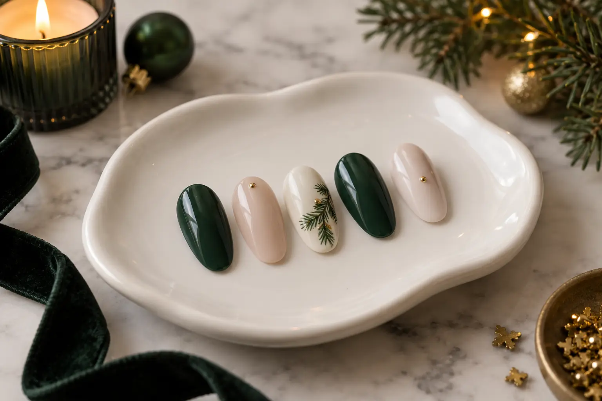

Grožio vizitai prieš Kalėdas: nagų dizainas ir kelių paslaugų planas
Autorius: Madbeauty redakcija · Numatyta 2026 m. lapkričio 10 d. 10:00 (Lietuvos laiku)
Dvi originalios šventinio nagų dizaino kryptys ir praktiškas planas keliems vizitams, dėliojamas pagal patvirtintą paslaugų apimtį, trukmę ir laiką.

Planuojant 2026 m. Kalėdų vizitus, pirmiausia apsibrėžkite norimą nagų dizainą ir svarbiausio renginio laiką, o tada dėliokite vizitus atgal nuo tos datos. Tikslią eigą ir trukmę turi patvirtinti paslaugą teikiantys specialistai: vien iš kategorijos pavadinimo negalima spręsti, kas įeina į paslaugą ar ar yra laisvų laikų.
Dvi šventinio nagų dizaino kryptys
Štai dvi iliustracinės idėjos, kurias galima pritaikyti pagal nagų ilgį, aprangą ir norimą ryškumą. Jos nėra konkretaus meistro darbų pavyzdžiai ar paslaugos pasiūlymas.
- Gili vyšninė spalva ir vienas metalinio atspalvio akcentas. Pagrindinė spalva lieka dominuojanti, o plona linija ar mažas taškas ant vieno ar dviejų nagų suteikia šventinį motyvą.
- Pieno spalvos pagrindas ir tamsiai žalios linijos. Pasirinkite vieną aiškų ornamentą, pavyzdžiui, lenktą šakelės formą, ir kartokite jį saikingai, kad dizainas liktų lengvas.
Kad idėja būtų įgyvendinama, prieš vizitą pasirinkite vieną pagrindinį akcentą: spalvą, tekstūrą arba ornamentą. Nuotraukoje pažymėkite, kas svarbiausia, ir atskirai pasakykite, ką galima keisti. Spalvą bei jos derinį galite apgalvoti su gidu „Kaip pasirinkti nagų spalvą“.
Kalendorių dėliokite atgal nuo renginio
Užrašykite renginio datą ir laiką, tada susirašykite norimas paslaugas. Kiekvienai paslaugai nurodykite konkretų rezultatą: pavyzdžiui, nagų formos sutvarkymą, dangos keitimą ar pasirinktą dizainą. Taip lengviau išsiaiškinti, ar paslaugos aprašas atitinka jūsų poreikį.
- Paklauskite, kas tiksliai įeina į kiekvieną vizitą: ar reikės nuimti ankstesnę dangą, kiek dizaino akcentų planuojate ir ar reikalingas papildomas darbas.
- Paprašykite patvirtinti numatomą trukmę, kainą, adresą ir laiką. Jei derinate kelias paslaugas, atskirai pasitikslinkite, ar jas galima atlikti vieną po kitos ir kiek laiko palikti tarp vizitų.
- Tik gavę atsakymus sudėliokite vizitų tvarką. Įtraukite savo pasirinktą kelionės ir vėlavimo rezervą; vieno visiems tinkamo tarpo nėra.
- Prieš laikydami planą užbaigtu, patikrinkite, ar kiekvienas laikas patvirtintas, o ne tik pasiūlytas ar pažymėtas kalendoriuje.
Trumpas planavimo ruošinys
Užpildykite šiuos laukus kiekvienam vizitui. Jei trukmė ar paslaugos apimtis dar nepatvirtinta, palikite ją kaip klausimą, o ne spėjamą reikšmę.
- Renginio data ir laikas: ___
- Norima paslauga ir konkretus rezultatas: ___
- Kas įeina į paslaugą, įskaitant nuėmimą ar dizainą: ___
- Teikėjo patvirtinta trukmė, kaina, vieta ir vizito laikas: ___
- Kelionės bei mano pasirinktas laiko rezervas: ___
- Patvirtinimas gautas: taip / ne; sąlygos išsaugotos: taip / ne
Kai derinate kelis vizitus, šį ruošinį pakartokite ir sutikrinkite datas tarpusavyje. Platesnį kontekstą apie vizitų derinimą pateikia gidas „Keli grožio vizitai ir individualūs poreikiai: laiko, vietos bei komforto planas“.
Patvirtinkite apimtį ir tikrą laiką
VVTAT rekomenduoja prieš paslaugą aiškiai sutarti jos apimtį ir kainą bei išsaugoti mokėjimo dokumentą. Tai padeda turėti susitarimo įrodymus, bet savaime negarantuoja konkretaus rezultato ar pinigų grąžinimo. Daugiau informacijos pateikia „VVTAT · grožio paslaugos ir ginčai“.
Madbeauty nacionaliniame „Dizaino“ pasirinkime galite pradėti nuo paslaugos kategorijos ir pasirinkti miestą. Pats nacionalinis pasirinkimas nepatvirtina, kad mieste yra teikėjų, laisvų laikų ar užbaigta rezervacija.
Peržiūrėkite nagų dizaino kategoriją ir patikrinkite, ar pasirinkus miestą rodomas aktualus rezultatas.